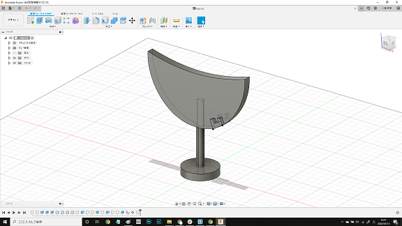
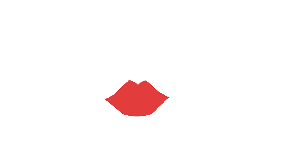

今回私が考えたのは「すっぴん隠し」です。


〇どんなものか
・化粧をしてなくても安心してカメラに映ることができるもの
・パソコンや机などに先端を付け固定し、任意の場所を隠すことが可能で、
zoomなどでこれを使用すると透過されるので、隠した場所を好きな画像に置き換えることができる。
(↑どう楽しく生きるかというテーマのもと、遊び心を加えた)
〇なぜこれを作ろうと思ったのか
・zoomで顔をうつす機会が増えたが、家にいる間に化粧をしたくない！授業ギリギリまで寝ていたい！
という気持ちから作ろうと思った(zoomには顔補正フィルターがないため)
下の画像が原案↓

〇みんなからもらった意見
・顔のどこを隠すか調節できたらよさそう
・立てるタイプよりどこかにつけられる方が邪魔じゃないかも
・表情変えられたら面白いかも…でも表情使う場面は分けたい…
→透過できるようにグリーンバックにして画像を作る？ etc...

これらの意見を考慮して最終的にできたのが初めに紹介したもの
Q.マスクじゃダメなのか？
A.これから暑くなる季節にマスクを着用したくない